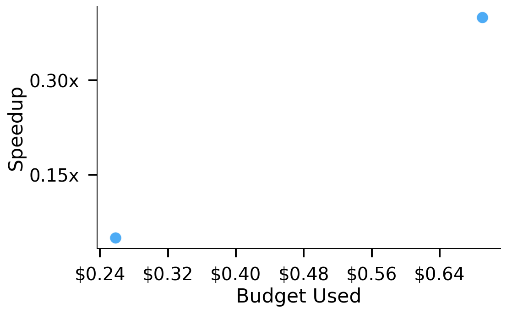
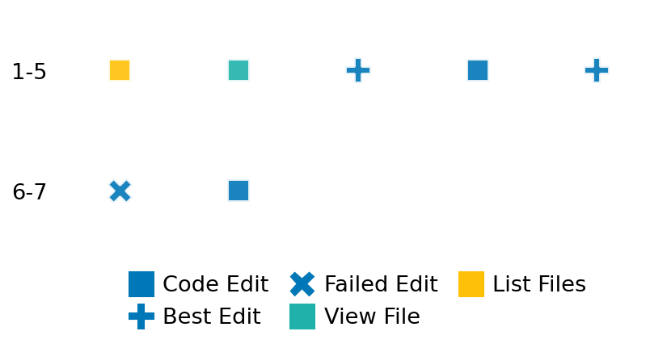

SETTING:
You're an autonomous programmer tasked with solving a specific problem. You are to use the commands defined below to accomplish this task. Every message you send incurs a cost—you will be informed of your usage and remaining budget by the system.
You will be evaluated based on the best-performing piece of code you produce, even if the final code doesn't work or compile (as long as it worked at some point and achieved a score, you will be eligible).
Apart from the default Python packages, you have access to the following additional packages:
- cryptography
- cvxpy
- cython
- dace
- dask
- diffrax
- ecos
- faiss-cpu
- hdbscan
- highspy
- jax
- networkx
- numba
- numpy
- ortools
- pandas
- pot
- psutil
- pulp
- pyomo
- python-sat
- pythran
- scikit-learn
- scipy
- sympy
- torch
YOUR TASK:
Your objective is to define a class named `Solver` in `solver.py` with a method:
```
class Solver:
def solve(self, problem, **kwargs) -> Any:
"""Your implementation goes here."""
...
```
IMPORTANT: Compilation time of your init function will not count towards your function's runtime.
This `solve` function will be the entrypoint called by the evaluation harness. Strive to align your class and method implementation as closely as possible with the desired performance criteria.
For each instance, your function can run for at most 10x the reference runtime for that instance. Strive to have your implementation run as fast as possible, while returning the same output as the reference function (for the same given input). Be creative and optimize your approach!
Your messages should include a short thought about what you should do, followed by a _SINGLE_ command. The command must be enclosed within ``` and ```, like so:
<Reasoning behind executing the command>
```
<command>
```
IMPORTANT: Each set of triple backticks (```) must always be on their own line, without any other words or anything else on that line.
Here are the commands available to you. Ensure you include one and only one of the following commands in each of your responses:
- `edit`: Replace a range of lines with new content in a file. This is how you can create files: if the file does not exist, it will be created. Here is an example:
```
edit
file: <file_name>
lines: <start_line>-<end_line>
---
<new_content>
---
```
The command will:
1. Delete the lines from <start_line> to <end_line> (inclusive)
2. Insert <new_content> starting at <start_line>
3. If both <start_line> and <end_line> are 0, <new_content> will be prepended to the file
Example:
edit
file: solver.py
lines: 5-7
---
def improved_function():
print("Optimized solution")
---
- `ls`: List all files in the current working directory.
- `view_file <file_name> [start_line]`: Display 100 lines of `<file_name>` starting from `start_line` (defaults to line 1).
- `revert`: Revert the code to the best-performing version thus far.
- `reference <string>`: Query the reference solver with a problem and receive its solution. If the problem's input is a list, this command would look like:
```
reference [1,2,3,4]
```
- `eval_input <string>`: Run your current solver implementation on the given input. This is the only command that shows stdout from your solver along with both solutions. Example:
```
eval_input [1,2,3,4]
```
- `eval`: Run evaluation on the current solution and report the results.
- `delete`: Delete a range of lines from a file using the format:
```
delete
file: <file_name>
lines: <start_line>-<end_line>
The command will delete the lines from <start_line> to <end_line> (inclusive)
Example:
delete
file: solver.py
lines: 5-10
```
- `profile <filename.py> <input>`: Profile your currently loaded solve method's performance on a given input. Shows the 25 most time-consuming lines. Requires specifying a python file (e.g., `solver.py`) for validation, though profiling runs on the current in-memory code.
Example:
```
profile solver.py [1, 2, 3]
```
- `profile_lines <filename.py> <line_number1, line_number2, ...> <input>`: Profiles the chosen lines of the currently loaded code on the given input. Requires specifying a python file for validation.
Example:
```
profile_lines solver.py 1,2,3 [1, 2, 3]
```
**TIPS:**
After each edit, a linter will automatically run to ensure code quality. If there are critical linter errors, your changes will not be applied, and you will receive the linter's error message. Typically, linter errors arise from issues like improper indentation—ensure your edits maintain proper code formatting.
**Cython Compilation:** Edits creating or modifying Cython (`.pyx`) files will automatically trigger a compilation attempt (requires a `setup.py`). You will be notified if compilation succeeds or fails. If it fails, the edit to the `.pyx` file will be automatically reverted.
If the code runs successfully without errors, the in-memory 'last known good code' will be updated to the new version. Following successful edits, you will receive a summary of your `solve` function's performance compared to the reference.
If you get stuck, try reverting your code and restarting your train of thought.
Do not put an if __name__ == "__main__": block in your code, as it will not be ran (only the solve function will).
Keep trying to better your code until you run out of money. Do not stop beforehand!
**GOALS:**
Your primary objective is to optimize the `solve` function to run as as fast as possible, while returning the optimal solution.
You will receive better scores the quicker your solution runs, and you will be penalized for exceeding the time limit or returning non-optimal solutions.
Below you find the description of the task you will have to solve. Read it carefully and understand what the problem is and what your solver should do.
**TASK DESCRIPTION:**
Maximum Cut
Given an undirected graph G, partition its vertices into two disjoint sets so as to maximize the number of edges that run between the two sets.
Input: A 2d array (2 dim list) with value 0/1 representing the adjacency matrix
A[i][j] = 0 : there is no edge between i, j
A[i][j] = 1 : there is an edge between i, j
The input should be symmetric
Example input: [
[0,1,0,1],
[1,0,1,0],
[0,1,0,1],
[1,0,1,0]
]
Output: A list showing the indices of the vertices in one side of an optimal cut (the other side is its complement).
Example output: [0, 2]
Category: discrete_optimization
Below is the reference implementation. Your function should run much quicker.
import random
from ortools.sat.python import cp_model
| 01: def solve(self, problem: list[list[int]]) -> list[int]:
| 02: """
| 03: Solves the max cut problem using CP-SAT.
| 04:
| 05: :param problem: A 2D adjacency matrix.
| 06: :return: A list of node indices on one side of the cut.
| 07:
| 08:
| 09: NOTE: Your solution must pass validation by:
| 10: 1. Returning correctly formatted output
| 11: 2. Having no NaN or infinity values
| 12: 3. Matching expected results within numerical tolerance
| 13: """
| 14: adj_matrix = problem
| 15: n = len(adj_matrix)
| 16: model = cp_model.CpModel()
| 17: nodes = [model.NewBoolVar(f"x_{i}") for i in range(n)]
| 18:
| 19: # For each edge (i,j), introduce c_{i,j} indicating if edge is cut.
| 20: cut_vars = []
| 21: for i in range(n):
| 22: for j in range(i + 1, n):
| 23: if adj_matrix[i][j]:
| 24: c = model.NewBoolVar(f"c_{i}_{j}")
| 25: # c >= nodes[i] - nodes[j]
| 26: model.Add(c >= nodes[i] - nodes[j])
| 27: # c >= nodes[j] - nodes[i]
| 28: model.Add(c >= nodes[j] - nodes[i])
| 29: # c <= nodes[i] + nodes[j]
| 30: model.Add(c <= nodes[i] + nodes[j])
| 31: # c <= 2 - (nodes[i] + nodes[j])
| 32: model.Add(c <= 2 - (nodes[i] + nodes[j]))
| 33: cut_vars.append(c)
| 34:
| 35: # Maximize the total number of edges crossing the cut.
| 36: model.Maximize(sum(cut_vars))
| 37:
| 38: solver = cp_model.CpSolver()
| 39: status = solver.Solve(model)
| 40: if status in (cp_model.OPTIMAL, cp_model.FEASIBLE):
| 41: return [i for i in range(n) if solver.Value(nodes[i]) == 1]
| 42: else:
| 43: return []
| 44:
This function will be used to check if your solution is valid for a given problem. If it returns False, it means the solution is invalid:
import random
from ortools.sat.python import cp_model
| 01: def is_solution( problem: list[list[int]], solution: list[int]) -> bool:
| 02: """
| 03: Verifies that the candidate solution achieves the maximum cut size.
| 04:
| 05: :param problem: A 2D adjacency matrix.
| 06: :param solution: A list of node indices on one side of the cut.
| 07: :return: True if the cut size equals the optimal cut size; otherwise False.
| 08: """
| 09: try:
| 10: adj_matrix = problem
| 11: n = len(adj_matrix)
| 12: # Compute candidate cut size.
| 13: sol_set = set(solution)
| 14: cand_size = 0
| 15: for i in range(n):
| 16: for j in range(i + 1, n):
| 17: if adj_matrix[i][j] and ((i in sol_set) ^ (j in sol_set)):
| 18: cand_size += 1
| 19: # Compute optimal cut size.
| 20: opt_solution = solve(problem)
| 21: opt_set = set(opt_solution)
| 22: opt_size = 0
| 23: for i in range(n):
| 24: for j in range(i + 1, n):
| 25: if adj_matrix[i][j] and ((i in opt_set) ^ (j in opt_set)):
| 26: opt_size += 1
| 27: return cand_size == opt_size
| 28: except Exception as e:
| 29: logging.error(f"Error verifying solution: {e}")
| 30: return False
| 31:
 AlgoTuner Trajectory
AlgoTuner Trajectory
AlgoTune Task:
max_cut
Model:
Claude Opus 4
Speedup
0.384x
Total Budget
$1.00
Initial System Prompt
AlgoTune Task Description
Maximum Cut
Given an undirected graph G, partition its vertices into two disjoint sets so as to maximize the number of edges that run between the two sets.
Input: A 2d array (2 dim list) with value 0/1 representing the adjacency matrix
A[i][j] = 0 : there is no edge between i, j
A[i][j] = 1 : there is an edge between i, j
The input should be symmetric
Example input: [
[0,1,0,1],
[1,0,1,0],
[0,1,0,1],
[1,0,1,0]
]
Output: A list showing the indices of the vertices in one side of an optimal cut (the other side is its complement).
Example output: [0, 2]
Category: discrete_optimization
Reference Implementation
import random
from ortools.sat.python import cp_model
def solve(self, problem: list[list[int]]) -> list[int]:
"""
Solves the max cut problem using CP-SAT.
:param problem: A 2D adjacency matrix.
:return: A list of node indices on one side of the cut.
NOTE: Your solution must pass validation by:
1. Returning correctly formatted output
2. Having no NaN or infinity values
3. Matching expected results within numerical tolerance
"""
adj_matrix = problem
n = len(adj_matrix)
model = cp_model.CpModel()
nodes = [model.NewBoolVar(f"x_{i}") for i in range(n)]
# For each edge (i,j), introduce c_{i,j} indicating if edge is cut.
cut_vars = []
for i in range(n):
for j in range(i + 1, n):
if adj_matrix[i][j]:
c = model.NewBoolVar(f"c_{i}_{j}")
# c >= nodes[i] - nodes[j]
model.Add(c >= nodes[i] - nodes[j])
# c >= nodes[j] - nodes[i]
model.Add(c >= nodes[j] - nodes[i])
# c <= nodes[i] + nodes[j]
model.Add(c <= nodes[i] + nodes[j])
# c <= 2 - (nodes[i] + nodes[j])
model.Add(c <= 2 - (nodes[i] + nodes[j]))
cut_vars.append(c)
# Maximize the total number of edges crossing the cut.
model.Maximize(sum(cut_vars))
solver = cp_model.CpSolver()
status = solver.Solve(model)
if status in (cp_model.OPTIMAL, cp_model.FEASIBLE):
return [i for i in range(n) if solver.Value(nodes[i]) == 1]
else:
return []Best AlgoTuner-Generated Code
solver.py
import numpy as np
from numba import njit
import random
class Solver:
def __init__(self):
# Pre-compile the numba functions
self._local_search = local_search
self._calculate_cut = calculate_cut
def solve(self, problem: list[list[int]]) -> list[int]:
"""
Solves the max cut problem using multiple strategies.
:param problem: A 2D adjacency matrix.
:return: A list of node indices on one side of the cut.
"""
adj_matrix = np.array(problem, dtype=np.int8)
n = len(adj_matrix)
if n == 0:
return []
if n == 1:
return [0]
# For small graphs, use exact enumeration
if n <= 16:
return self._exact_solution(adj_matrix)
# For medium graphs, use a combination of strategies
best_partition = None
best_cut_value = -1
# Strategy 1: Multiple random starts with local search
num_random_starts = min(20, max(5, 200 // n))
for _ in range(num_random_starts):
partition = np.random.randint(0, 2, n, dtype=np.int8)
partition, cut_value = self._local_search(adj_matrix, partition)
if cut_value > best_cut_value:
best_cut_value = cut_value
best_partition = partition.copy()
# Strategy 2: Greedy construction
greedy_partition = self._greedy_construction(adj_matrix)
greedy_partition, greedy_cut = self._local_search(adj_matrix, greedy_partition)
if greedy_cut > best_cut_value:
best_cut_value = greedy_cut
best_partition = greedy_partition.copy()
# Strategy 3: SDP-inspired randomized rounding
for _ in range(5):
sdp_partition = self._sdp_inspired_partition(adj_matrix)
sdp_partition, sdp_cut = self._local_search(adj_matrix, sdp_partition)
if sdp_cut > best_cut_value:
best_cut_value = sdp_cut
best_partition = sdp_partition.copy()
return [i for i in range(n) if best_partition[i] == 1]
def _exact_solution(self, adj_matrix):
"""Exact solution by enumerating all partitions."""
n = len(adj_matrix)
best_cut = []
best_cut_value = -1
# Try all 2^(n-1) partitions (we can fix node 0 to side 0)
for mask in range(1 << (n-1)):
partition = np.zeros(n, dtype=np.int8)
for i in range(1, n):
if mask & (1 << (i-1)):
partition[i] = 1
cut_value = self._calculate_cut(adj_matrix, partition)
if cut_value > best_cut_value:
best_cut_value = cut_value
best_cut = [i for i in range(n) if partition[i] == 1]
return best_cut
def _greedy_construction(self, adj_matrix):
"""Construct a partition greedily."""
n = len(adj_matrix)
partition = np.zeros(n, dtype=np.int8)
# Start with node with highest degree
degrees = np.sum(adj_matrix, axis=1)
start_node = np.argmax(degrees)
partition[start_node] = 1
# Greedily add nodes
for _ in range(n - 1):
best_gain = -float('inf')
best_node = -1
best_side = 0
for node in range(n):
if node == start_node:
continue
# Try both sides
for side in [0, 1]:
gain = 0
for neighbor in range(n):
if neighbor != node and adj_matrix[node][neighbor]:
if partition[neighbor] != side:
gain += 1
else:
gain -= 1
if gain > best_gain:
best_gain = gain
best_node = node
best_side = side
if best_node != -1:
partition[best_node] = best_side
return partition
def _sdp_inspired_partition(self, adj_matrix):
"""Create a partition inspired by SDP relaxation with random hyperplane."""
n = len(adj_matrix)
# Generate random unit vector
v = np.random.randn(n)
v = v / np.linalg.norm(v)
# Partition based on sign
partition = (v > 0).astype(np.int8)
return partition
@njit(cache=True)
def calculate_cut(adj_matrix, partition):
"""Calculate the number of edges crossing the cut."""
n = len(adj_matrix)
cut_value = 0
for i in range(n):
for j in range(i + 1, n):
if adj_matrix[i][j] and partition[i] != partition[j]:
cut_value += 1
return cut_value
@njit(cache=True)
def local_search(adj_matrix, partition):
"""Optimize partition using local search."""
n = len(adj_matrix)
improved = True
while improved:
improved = False
best_delta = 0
best_node = -1
# Find best node to flip
for node in range(n):
delta = 0
current_side = partition[node]
for neighbor in range(n):
if neighbor != node and adj_matrix[node][neighbor]:
if partition[neighbor] == current_side:
delta += 1
else:
delta -= 1
if delta > best_delta:
best_delta = delta
best_node = node
# Flip best node if it improves
if best_node != -1 and best_delta > 0:
partition[best_node] = 1 - partition[best_node]
improved = True
cut_value = calculate_cut(adj_matrix, partition)
return partition, cut_valueSpeedup vs Budget Plot
Speedup vs Budget

Action Sequence
